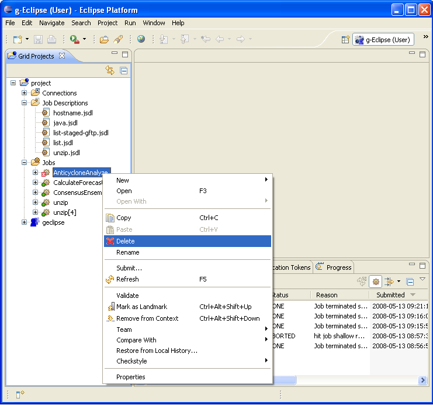
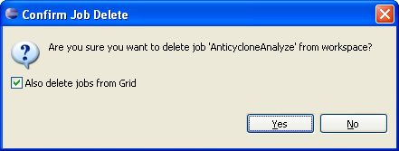

If you want to clean-up your workspace and release Grid resources, you can Delete Job.
On view Grid Projects or Jobs select job and from context menu start Delete.

In appeared message confirm you want to delete selected jobs.
If you check "Also delete jobs from Grid", then before deletion job from local workspace, job resources on the Grid will be released.
